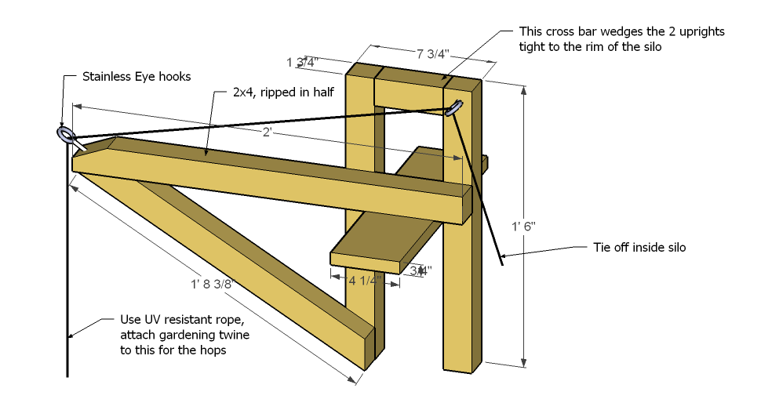
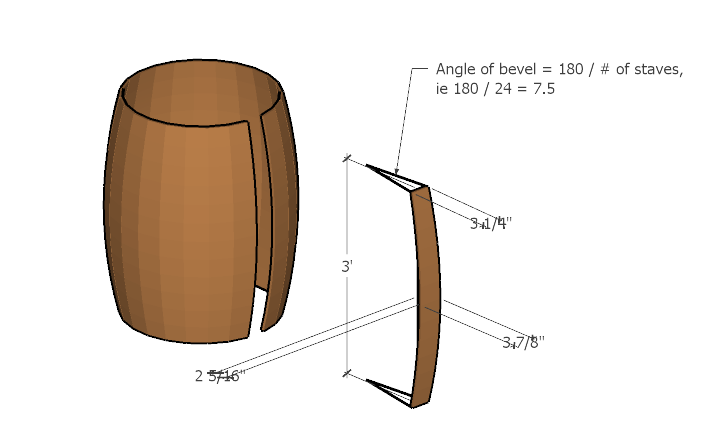

Business Ideas
Technology
In General: 1. Minimize startup costs 1. Find a woman to own the business 1. Use local gov’t IT business incentives 1. Avoid brick and mortar type of business
POS
A FOSS-based Point of Sale system
- Business model basics
- Inexpensive POS systems for small businesses
- Services
- Hardware setup
- Specialize in custom-built registers
- Provide for access for remote management over iPhone/Droid/WindowsMobile
- Maximize cloud computing usage to allow for minimal hardware
- Software setup
- Specialize in FOSS implementations
- Growth options for other IT services
- web presence
- Mail server
- Web storefront
- use blog for specials updates?
- allows RSS feeds of specials
- use blog for specials updates?
- payroll management
- asset lifecycle management
- electronic document management
- Customer account management
- Biometric payment system?
- Energy audits
- Non-intrusive load monitoring
- Integration with Purchase Order system
- web presence
- Support
- Use helpdesk solution for efficient management
- Hardware setup
- Startup Costs
- Hardware
- $2500 / emp / year
- Phones
- $1500 / emp / year
- Cloud acct
- $1000 / yr
- Advertising
- $3000 / yr
- Insurance
- $1000 / yr?
- Misc (travel, fees, manuals, certifications, etc)
- round up 10%
- PCI DSS compliance audit
- Hardware
- Comparable companies
- Truserv affiliate
- $900 / month, forced upgrades, fully managed, small IT overhead
- Odoo
- $35 / user month, no forced upgrades, SaaS, some IT overhead
- Locals
- Onondaga Cash Register
- Uses KeyStroke POS
- $2500 + $500 per year maintenance/upgrades
- $3000 for terminal hardware, installation, and training
- $110 per hour support
- Uses KeyStroke POS
- DUMAC
- Onondaga Cash Register
- Truserv affiliate
- Hourly Rates
- Setup
- $60
- alternatively $2500 per terminal excluding hardware
- Maintenance/Support
- $30
- Development
- $45
- Ancillary
- APC of $20.00 / hr to cover IT costs
- Multiplier of 2.0 to cover business costs, 10% profit, benefits
- Setup
- Requirements
- PCI compliance
- Business Name
- requirements
- Easy to pronounce and remember
- Invokes thought of IT for retail
- Invokes core business ideals: Simplicity
- Unique
- Avoid service or location lockin
- Simple Ledger Systems
- Intelligible Accounting Software
- requirements
- Propaganda
- http://www.informationweek.com/news/global-cio/interviews/showArticle.jhtml?articleID=225200154&cid=RSSfeed_IWK_All
- hardware
- build small form-factor CPUs as registers
- touch screen
- wireless barcode scanner
- works for inventory as well as checkout
- RFID logon
- Solid state hard drive
- USB receipt printer
- USB credit card scanner
- USB barcode scanner
- cheap
- Security webcams
- Cash drawer
- Bluetooth barcode scanner
- Uses any OS preferred by customer
- Vendors
- build small form-factor CPUs as registers
- http://www.posonlinestore.com/
- software
- cloud-based
- allows remote access for administration and management from any platform
- use local cache at register for network outages coupled with disconnected DB editing
- Minimizes IT overhead effort
- no need for backup
- no need for power management
- no need for uptime monitoring
- maximizes security
- Minimizes hardware costs
- RDBMS backend
- Care needed to make sure you can hook into any retail DB needed by the client!
- Client interface
- front-end requirements
- Can be customized to any customer, for simplest possible interface
- Can run on any platform (including phones)
- Includes custom report generators for management
- Skinnable
- python based
- Candidates
- OpenERP
- POSTerita
- Imonggo
- OpenBravo
- LemonPOS
- Roll my own
- Python Django Google Gears
- Micro$oft
- front-end requirements
- cloud-based
SIV
CFD
Computational Fluid Dynamics modeling and consulting
- Business Model Basics
- Liability management
- Insurance: $1mil Umbrella policy
- Caution: Conservative models backed up by physical modeling
- Training: PE license, advanced courses in fluid dynamics
- Capabilities
- 3D
- Mulit-phase
- Thermodynamics (including combustion?)
- Laboratory
- Bench-scale physical modeling to support models
- Client base
- ??? From Jeff
- Marketing
- Canned presentation of resources, capabilities, performance goals
- Do business development freebies using single-dimension modeling
- Liability management
- Hardware
- Cloud-based VM for meshing and simulations
- Amazon EC2 (slower, cheaper, lots of features)
- GoGrid (faster, more expensive, less options)
- Laptop for 3D cad and post processing
- Is a netbook good enough? Because those are very cheap
- Cloud-based VM for meshing and simulations
- Software
- OpenFOAM for mesh and simulations
- Sketchup for 3D cad
- Paraview for post processing
- Performance Goals
- Accuracy
- 95% confidence level
- Speed
- Use parrallel processing to cut scenario runs to 24hrs
- Flexibility
- Wide array of capabilities
- Use any type of client data
- Costs
- Software costs minimized by using OpenFOAM (free) and Sketchup ($400)
- Hardware costs minimized by using cloud computing ($1-$5 per hour of simulation)
- Physical modeling costs minimized by using only bench-scale models in home-based lab
- Insurance costs minimized by getting $1mil policy instead of $2mil
- Accuracy
Food
OMM
Old Mill Microbrews: Ales, Ciders, Wines and Mead
- Pitch (get it?):
- With barley, hops, honey and apples organically grown in rich CNY soils, using water from the pristine headwaters of Otisco lake, brewed under the power of Nine Mile Creek, and aged to perfection, comes local ales, ciders, fruit wines and meades of world-class quality.
- grow hops up silo
- Need a trellis system for easy harvesting
- Need a platform on top
- Wood beam platform
- grow barley in 20 x 40 plot
- build homemade dryers
- Organic Honey
- signature recipes
- Bitter Ale
- Stout Ale
- Belgian White Ale
- Cherry Wine
- Blackberry Wine
- Honey Crisp Wine and Cider
- Ruby Frost Hard Cider
- Sweet and Dry Mead
- Value added products
- cheeses, sodas, art, smoked salt, and barrels
- use old mill building for brewing?
- can use micro-turbine for hydropower?
- bring water back from bucktail falls?
- get organic apples from McLusky’s, Elderberry pond?
- Liquor licenses
- Forms
- Fees
- Wholesale
- $900/yr microbrewery, $500/yr NYS farm winery, $600/yr ciders
- Retail
- $1000/yr for all
- Lawyer
- Wholesale
- need business plan
- secret to success
- Lots of inventory! Ample testing!


SFT
Schwenker Food Truck
Mobile Wishing-well grill set-up with French-German fusion small plates based on traditional Schwenker BBQ with a modern spin. And also, a smoker. Beechwood for fuel. Great for hanging out at a brewery (or hardware store). 1. Beer-marinated beef on a stick 1. Reisling-marinated chicken sandwiches 1. Choucroute 1. Flammkuchen 1. Sausage and white beans and brown rice 1. Josh’s recipe 1. Bean burgers 1. Josh’s recipe 1. Potato salad 1. Musgrave recipe, with egg, pickles, and onion 1. Fennel kraut 1. Hank Shaw-inspired recipe? 1. Quiche 1. ham and cheese, and roasted veg 1. Spaetzle pasta salad 1. made in the style of german potato salad, with bacon and vinegar dressing 1. Smoked wings 1. Josh’s recipe 1. Scotch egg/sausage bread/bierock thingy 1. Spinach Salad 1. Smoked cabbage wedge salad 1. PICKLES 1. German chocolate cake Food permit ($130)
SSS
Syracuse Smoked Salt
Using traditional (well-vetted) Syracuse brine sources, we dry it in evaporators and smoke it!